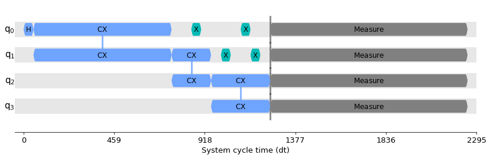
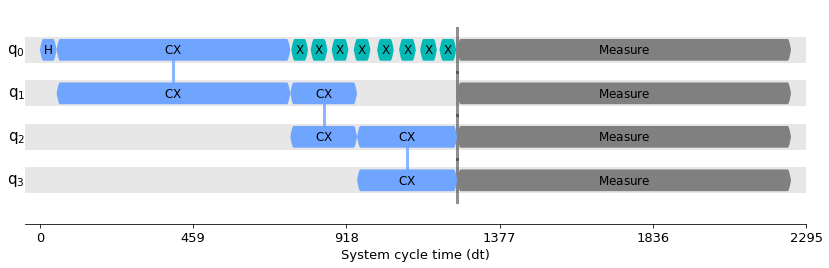

PadDynamicalDecoupling¶
- class PadDynamicalDecoupling(durations, dd_sequence, qubits=None, spacing=None, skip_reset_qubits=True, pulse_alignment=1, extra_slack_distribution='middle')[source]¶
Bases:
qiskit.transpiler.passes.scheduling.padding.base_padding.BasePaddingDynamical decoupling insertion pass.
This pass works on a scheduled, physical circuit. It scans the circuit for idle periods of time (i.e. those containing delay instructions) and inserts a DD sequence of gates in those spots. These gates amount to the identity, so do not alter the logical action of the circuit, but have the effect of mitigating decoherence in those idle periods.
As a special case, the pass allows a length-1 sequence (e.g. [XGate()]). In this case the DD insertion happens only when the gate inverse can be absorbed into a neighboring gate in the circuit (so we would still be replacing Delay with something that is equivalent to the identity). This can be used, for instance, as a Hahn echo.
This pass ensures that the inserted sequence preserves the circuit exactly (including global phase).
import numpy as np from qiskit.circuit import QuantumCircuit from qiskit.circuit.library import XGate from qiskit.transpiler import PassManager, InstructionDurations from qiskit.transpiler.passes import ALAPScheduleAnalysis, PadDynamicalDecoupling from qiskit.visualization import timeline_drawer circ = QuantumCircuit(4) circ.h(0) circ.cx(0, 1) circ.cx(1, 2) circ.cx(2, 3) circ.measure_all() durations = InstructionDurations( [("h", 0, 50), ("cx", [0, 1], 700), ("reset", None, 10), ("cx", [1, 2], 200), ("cx", [2, 3], 300), ("x", None, 50), ("measure", None, 1000)] )
# balanced X-X sequence on all qubits dd_sequence = [XGate(), XGate()] pm = PassManager([ALAPScheduleAnalysis(durations), PadDynamicalDecoupling(durations, dd_sequence)]) circ_dd = pm.run(circ) timeline_drawer(circ_dd)
# Uhrig sequence on qubit 0 n = 8 dd_sequence = [XGate()] * n def uhrig_pulse_location(k): return np.sin(np.pi * (k + 1) / (2 * n + 2)) ** 2 spacing = [] for k in range(n): spacing.append(uhrig_pulse_location(k) - sum(spacing)) spacing.append(1 - sum(spacing)) pm = PassManager( [ ALAPScheduleAnalysis(durations), PadDynamicalDecoupling(durations, dd_sequence, qubits=[0], spacing=spacing), ] ) circ_dd = pm.run(circ) timeline_drawer(circ_dd)
নোট
You may need to call alignment pass before running dynamical decoupling to guarantee your circuit satisfies acquisition alignment constraints.
Dynamical decoupling initializer.
- প্যারামিটার
durations (
InstructionDurations) -- Durations of instructions to be used in scheduling.dd_sequence (
List[Gate]) -- Sequence of gates to apply in idle spots.qubits (
Optional[List[int]]) -- Physical qubits on which to apply DD. If None, all qubits will undergo DD (when possible).spacing (
Optional[List[float]]) -- A list of spacings between the DD gates. The available slack will be divided according to this. The list length must be one more than the length of dd_sequence, and the elements must sum to 1. If None, a balanced spacing will be used [d/2, d, d, ..., d, d, d/2].skip_reset_qubits (
bool) -- If True, does not insert DD on idle periods that immediately follow initialized/reset qubits (as qubits in the ground state are less susceptile to decoherence).pulse_alignment (
int) -- The hardware constraints for gate timing allocation. This is usually provided frombackend.configuration().timing_constraints. If provided, the delay length, i.e.spacing, is implicitly adjusted to satisfy this constraint.extra_slack_distribution (
str) --The option to control the behavior of DD sequence generation. The duration of the DD sequence should be identical to an idle time in the scheduled quantum circuit, however, the delay in between gates comprising the sequence should be integer number in units of dt, and it might be further truncated when
pulse_alignmentis specified. This sometimes results in the duration of the created sequence being shorter than the idle time that you want to fill with the sequence, i.e. extra slack. This option takes following values."middle": Put the extra slack to the interval at the middle of the sequence.
"edges": Divide the extra slack as evenly as possible into intervals at beginning and end of the sequence.
- রেইজেস
TranspilerError -- When invalid DD sequence is specified.
TranspilerError -- When pulse gate with the duration which is non-multiple of the alignment constraint value is found.
Methods
Return the name of the pass.
Run the padding pass on
dag.Attributes
- is_analysis_pass¶
Check if the pass is an analysis pass.
If the pass is an AnalysisPass, that means that the pass can analyze the DAG and write the results of that analysis in the property set. Modifications on the DAG are not allowed by this kind of pass.
- is_transformation_pass¶
Check if the pass is a transformation pass.
If the pass is a TransformationPass, that means that the pass can manipulate the DAG, but cannot modify the property set (but it can be read).